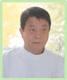

首页 > 医资介绍 首页 > 医资介绍 |
|
|
 |
 |
 |
 |
大连帝凯尔口腔科技有限公司地处大连市政府附近，是一家集口腔科器械和
材料的销售服务、新产品和新技术的开发与应用、口腔疾病的诊断与防治、
口腔患者心理学的研究等诸多功能于一体的现代化大型医疗卫生机构。其下
属分支机构大连帝凯尔口腔诊所是一家国际化的大型高档口腔诊疗机构，拥
有豪华的装修与服务设施、现代化的诊疗器材与设备、和一支技术过硬的医
疗精英队伍，能成功地独立开展口腔内、外科诊疗和进行口腔修复(包括种植
技术）及正畸治疗，全程采用网络化智能系统操作和管理，确保诊疗全程的
安全与系统化。同时，本公司不定期开展口腔及其相关专业的知识与技能的
培训邀请国内外（国外部分以日本为主）知名学者、教授来我公司示教讲学，
外派优秀工作人员赴日研修。一流的设备与环境，一流的人才与技术，一流
的服务态度，一流的经营理念，真正的与国际接轨！ |
|
|  |
方冶
帝凯尔院长
大连市口腔理事会理事
大连市口腔种植小组成员
1998年毕业于日本金泽大学口腔系
擅长口腔种植及精密附件，对口腔美学有 深入的研究，酷爱牙科技术，追求完美，所以临床操作时间比常规要长一倍，不诱导患者做不必要的牙齿美容。诙谐幽默的语言让治疗过程轻松愉快！ |
|
|
范丽萍
高级齿科医师
毕业于哈尔滨医科大学口腔系
擅长牙周治疗及种植冠上修复。工作态度严谨，对技术精益求精，坚持没有最好，只有更好。轻柔的手法，让您舒适安心，让治疗真正的变轻松。 |
|
梁淑贤
高级齿科医师
大连医科大学正畸硕士
擅长正畸治疗，对正畸的 复杂病例有深入的研究。以专业的技术，认真的态度，流利的英语得到国内外患者一致好评。
|
|
 |
|
|
|